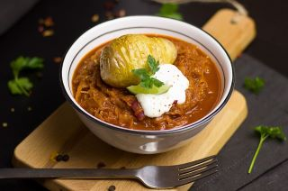
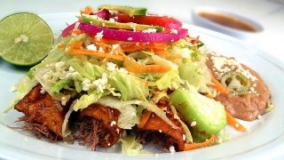
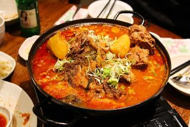

Evan was born and raised in Phoenix, Arizona. He started cooking in his own kitchen with his parents at the young age of 6. His parents always encouraged him to try new things and take risks with his cooking. By the time he had graduated high school, he new he wanted to go into the culinary arts field.
Evan was accepted into The Culinary School of America in Hyde Park, New York right out of high school. He knew that he wanted to get the best possible training he could and was dedicated to learning all he could from others. He graduated at the top of his class and honors from the staff. Once he graduated, he wanted to move closer to family to work.
Once Evan moved to the Tampa Bay area, he found work at some of the best restaurants in the area. After he dined at Midnight Grill one evening, he saw that the restaurants kitchen was not putting out the best food it could. He decided to talk with the owner and offer his assistance to the kitchen staff in order to improve the menu. Now after 5 years at the restaurant, he has fallen in love with the new menu he helped create and loves the beach side location in Pass-a-Grille. He decided to stay and continue serving his custom menu to the servers and still enjoys it to this day!
| Green Chile Stew | Green Chile Chicken Enchiladas | Chicken Curry |
|  |  |  |
Every Monday night, The Midnight Grill sponsors a milkshake drinking contest! You will have 10 minutes to down 3 of our famous "extra thick" shakes! If you can down all 3 shakes in the 10 minute window, win a free 8 oz Filet Mignon steak dinner from the restaurant! The reward is given as a coupon so you can come back and enjoy the meal when you recover from all the milkshakes! Good luck to all!
Good Burger FridaysWelcome to Good Burger, home of the Good Burger, can I take your order? On Friday nights, we are serving up a special version of the "Good Burger" from the TV show. It will also be available on sale for only $5.99! Offer good while supplies last! Enjoy!
| Downtown Location | Uptown Location | Beachfront Location |
| 15689 Main Street | 942 Riverview Place | 1222 Passa Grille Drive |
| Tampa, FL 34532 | St. Petersburg, FL 33716 | St. Pete Beach, FL 33652 |
The Midnight Grill was founded in 1985. We wanted to create a restaurant
that serves amazing food at amazing prices. Since day one, we have been
on a mission to find the very best comfort food and make it our own. We
take your favorite dishes and add a little of our own flair to make a
unique dish. The menu items may look like your standard fare, but the
taste is very unique!
Our goal is to make your night out as special as possible by giving you
a wide selection of food while keeping the prices low so that you don't
have to worry about ordering the cheapest thing on the menu! Please come
on by and have a bowl of delicious Green Chile Stew and see for yourself
how comfort food should be!
Have a question? Want to make reservations? Want to provide feedback?
Contact us!
Phone: (555) 321-5678
Email: support@midnightgrill.com